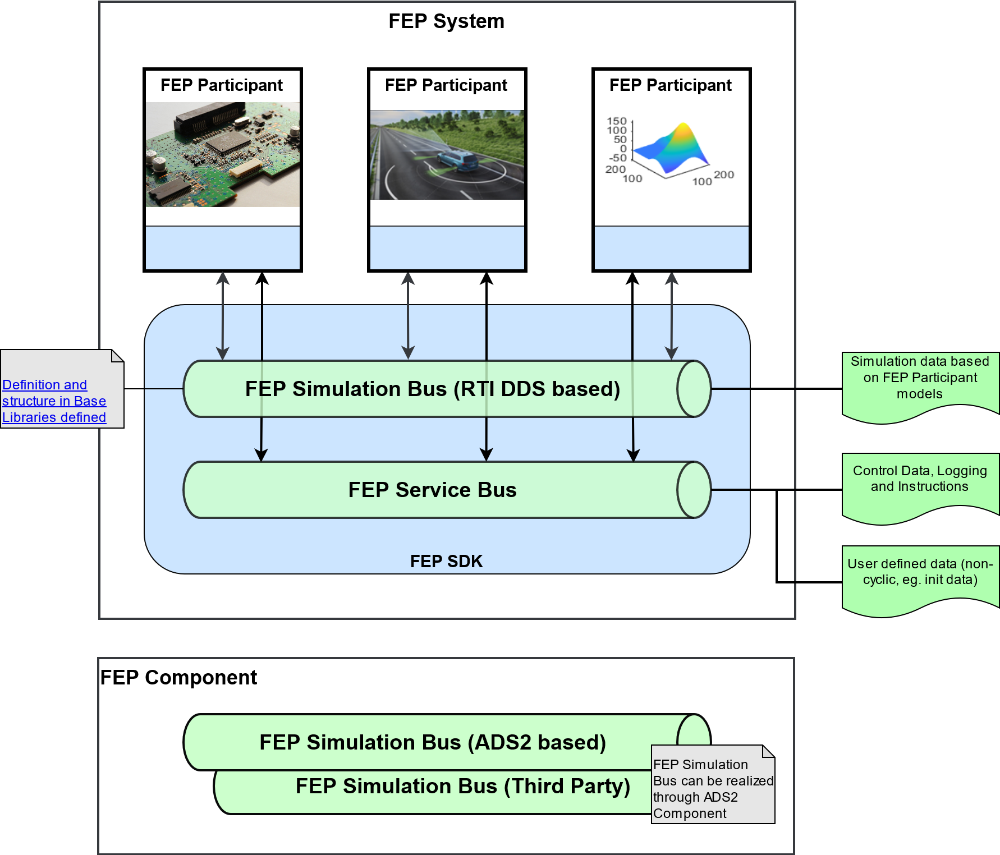

Overview
Challenge
What is the challenge or problems?
Couple different simulation and software environments using a middleware.
How this SDK solved them?
Testing with a virtual environment and a function in one common simulation.
Lower effort due to reuse of simulation components. They don’t need to be re-developed for different simulation environments or execution environments, which saves cost and time.
Higher level of continuity in all development phases due to reuse of simulation components. This helps create trust in the simulation and results can be compared to each other MIL → SIL → HIL → VIL.
Main Concepts of FEP SDK
What is a participant
Functions within the FEP SDK can be understood as services. That way, a FEP Component provides service functionality of a FEP Participant as component. FEP Participants can load a lot of different components, as described in the Application Architecture. The purpose of a FEP Participant is defined by the set of FEP Components it provides, while the behavior of a FEP Participant depends on the FEP Component Implementations that are loaded (simulation data is transferred via RTI DDS or ADS2).
What is a system
The FEP System consists of the FEP Participants that communicate through the simulation and the service bus.
FEP Simulation Bus
Enables the exchange of simulation data based on FEP Participant models.
Faster data transfer than via FEP Service Bus (e.g. for real-time usage).
Can be replaced by a FEP Component, like ADS2. Communication format is than defined by ADS2 and not by the FEP native Base Libraries.
FEP Service Bus
Enables the exchange of simulation control data and logging.
Slower data transfer than via FEP Simulation Bus.
Can be replaced by a third party FEP Component (currently no other implementation available).
Application Architecture
{kind=link}
Libraries
participant lib
system lib
sdk lib